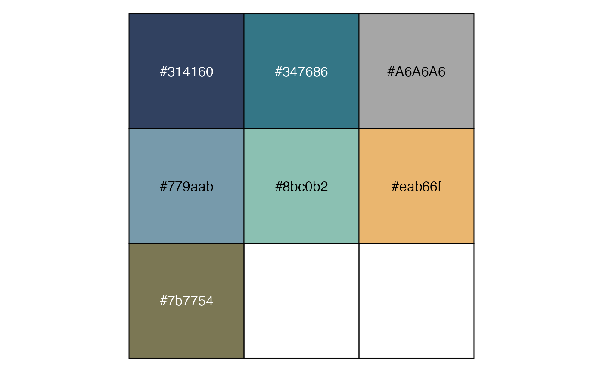
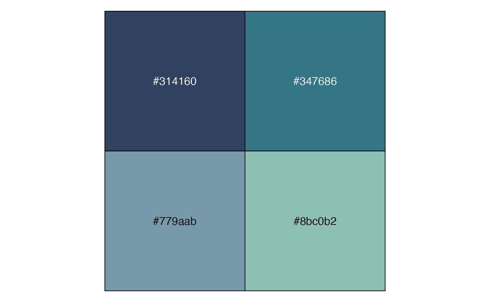
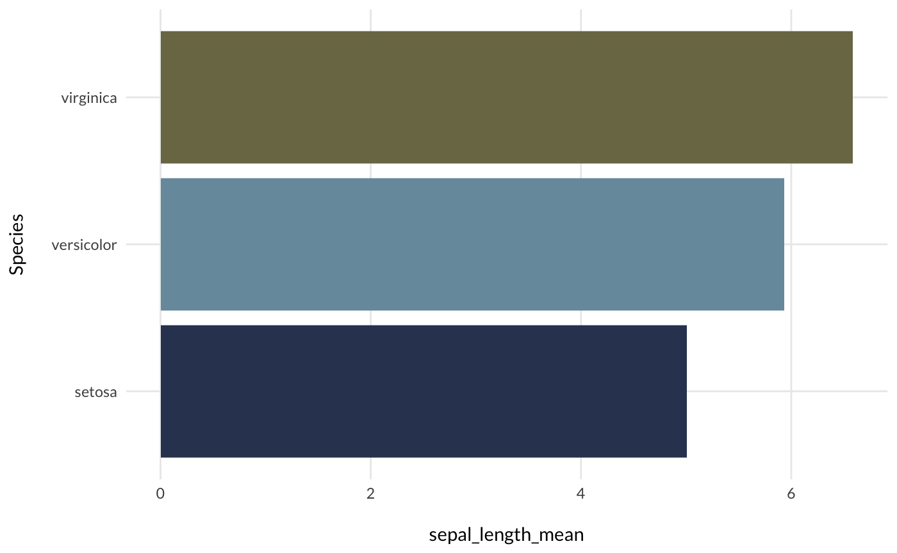
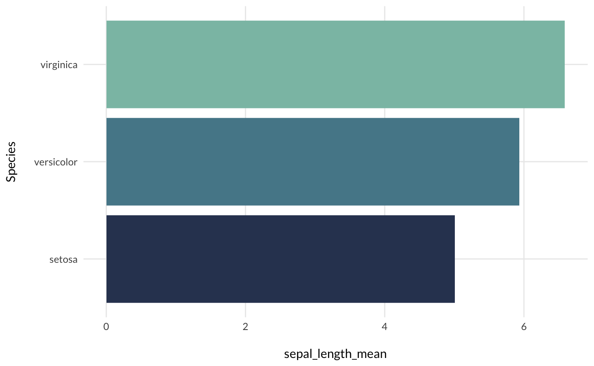
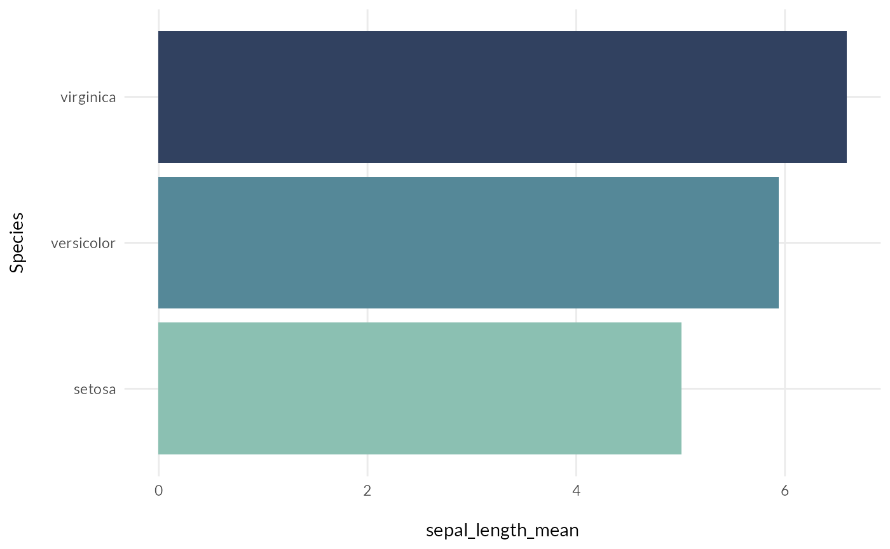
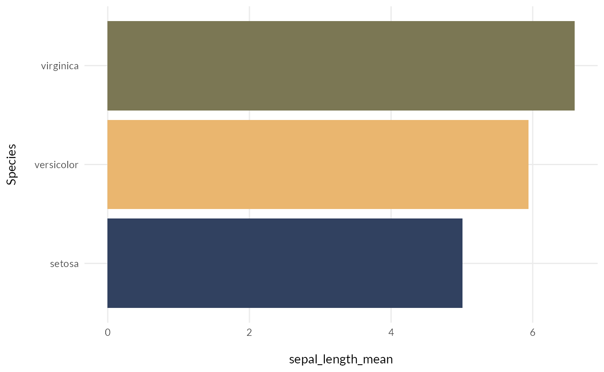

library(omni)
The package provides color and fill scales to match the OMNI color palette. Here is the “Main” color palette.

And here is the “Blues” palette (i.e. it just uses the blue colors in the OMNI palette).

You can add the line scale_fill_omni_discrete() to change the fill on a plot.
iris %>% dplyr::group_by(Species) %>% dplyr::summarise(sepal_length_mean = mean(Sepal.Length)) %>% ggplot2::ggplot(ggplot2::aes(x = Species, y = sepal_length_mean, fill = Species)) + ggplot2::geom_bar(stat = "identity") + ggplot2::coord_flip() + scale_fill_omni_discrete() + theme_omni(show_legend = FALSE)

You can change the palette by using the palette argument.
iris %>% dplyr::group_by(Species) %>% dplyr::summarise(sepal_length_mean = mean(Sepal.Length)) %>% ggplot2::ggplot(ggplot2::aes(x = Species, y = sepal_length_mean, fill = Species)) + ggplot2::geom_bar(stat = "identity") + ggplot2::coord_flip() + scale_fill_omni_discrete(palette = "Blues") + theme_omni(show_legend = FALSE)

You can reverse the order by using the reverse argument.
iris %>% dplyr::group_by(Species) %>% dplyr::summarise(sepal_length_mean = mean(Sepal.Length)) %>% ggplot2::ggplot(ggplot2::aes(x = Species, y = sepal_length_mean, fill = Species)) + ggplot2::geom_bar(stat = "identity") + ggplot2::coord_flip() + scale_fill_omni_discrete(palette = "Blues", reverse = TRUE) + theme_omni(show_legend = FALSE)

There is also a scale_fill_omni_continuous() function as well as scale_color_omni_discrete() and scale_color_omni_continuous() functions for colors.
Need more control? There is a omni_colors() function that allows you to extract individual colors. You can choose from: Dark Gray, Dark Blue, Medium, Blue, Light Blue, Teal, Orange, and Tan.
iris %>% dplyr::group_by(Species) %>% dplyr::summarise(sepal_length_mean = mean(Sepal.Length)) %>% ggplot2::ggplot(ggplot2::aes(x = Species, y = sepal_length_mean, fill = Species)) + ggplot2::geom_bar(stat = "identity") + ggplot2::coord_flip() + ggplot2::scale_fill_manual(values = c(omni_colors("Dark Blue", "Orange", "Tan"))) + theme_omni(show_legend = FALSE)
